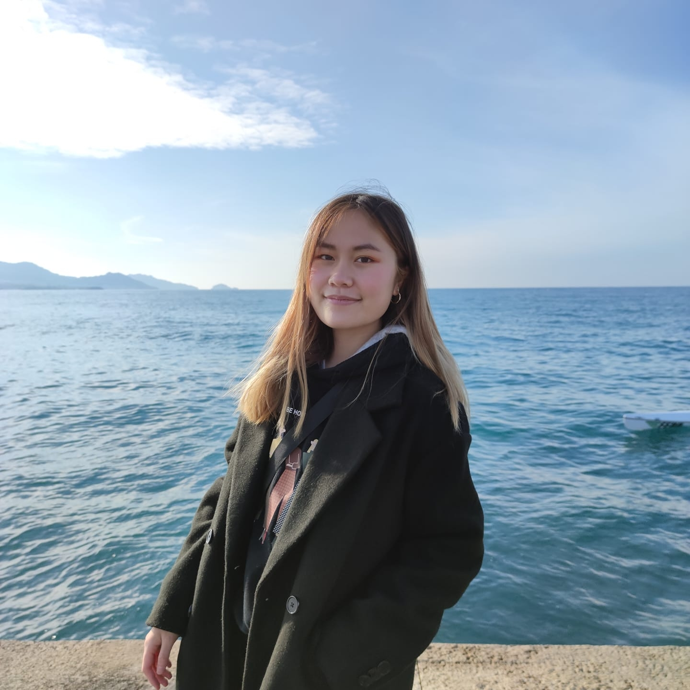

Hello, I'm Caroline ! 😊
I am a second year student at IESEG School of management and I just started to learn how to create my own web page ! I am a person passionate about discovering new things and learning new skills. In general, I am quite self-taught and I like to go at my own pace.
Discover my LinkedinVideo games 🎮
I have been introduced to video games since my young age, which made me become a gamer. What I like about games is that it works on your accuracy, reflexes, concentration... There are a lot of prejudices about video games even though they have a lot of benefits. I also started to stream, you'll find it by clicking below.
Check my TwitchDrawing ✏️
Drawing is one of my hobbies. I draw when I have inspiration. I need a model to have a basis for drawing. One of my regrets is that I didn't draw often when I was younger, to get the hang of it. One of my last drawings with a graphic tablet is the following:

In Seoul, in March 2023
Thanks to my school, I'll be an exchange student at Konkuk University in Seoul, South Korea. Since I was young, I have always been interested in South Korea culture, music, food... Traveling in South Korea was one of my dream, which will be realized next year.